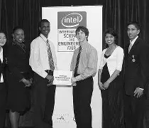

1968
From 1968 to today — Sustainability Through the Years at Intel.
Swipe, drag, or use the arrows to explore Intel milestones through time.
Since its founding in 1968, Intel has grown from managing basic environmental and safety concerns to becoming a global sustainability leader. Over the decades, the company has focused on energy efficiency, renewable energy, water conservation and restoration, waste reduction, and reducing emissions. Today, Intel pursues ambitious goals like net-zero carbon emissions, net positive water use, and sustainable supply chain practices.